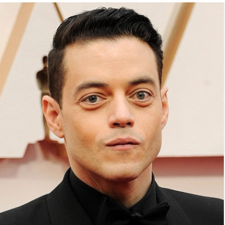

С кого рисовали данного персонажа

Рами Малек
Прототип: 1
Дата рождения: 12 мая 1981 года
Американский актёр египетского происхождения. Известность ему принесла роль Эллиота Алдерсона в телесериале «Мистер Робот», за которую он получил премию «Эмми».
Эйдан Галлахер
Прототип: 2
Дата рождения: 18 сентября 2003 года
Американский актёр, экологический активист и музыкант. Его первой большой работой стала роль Никки Харпера в сериале от Nickelodeon «Никки, Рикки, Дикки и Дон».

Киллиан Мёрфи
Прототип: 3
Дата рождения: 25 мая 1976 года
Ирландский актёр и музыкант, работающий в театре, кино и на телевидении. Начав творческую карьеру в качестве вокалиста и музыканта в рок-группе, он отказался от контракта с лейблом звукозаписи и решил посвятить себя актёрскому мастерству.